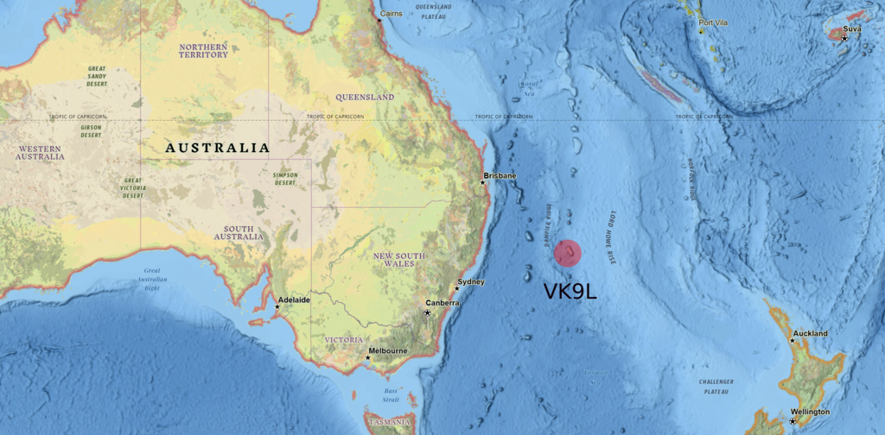
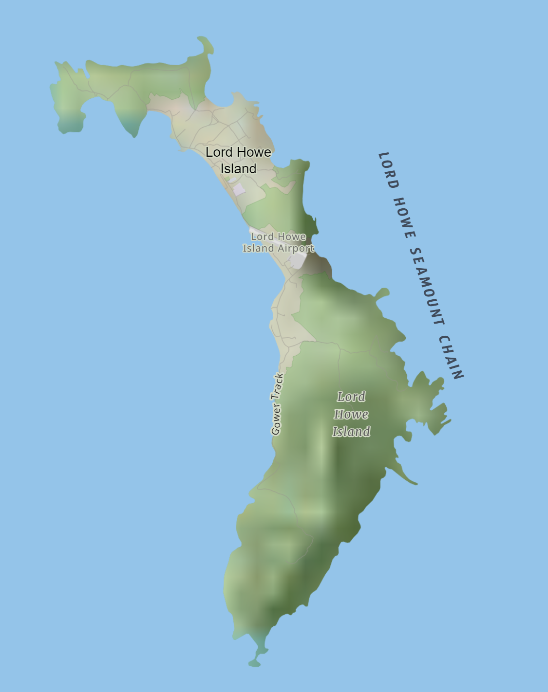

The VK9L/W7BRS 2024 DXpedition team respects the privacy of every visitor to this website. This policy explains our online data and information policy. This Policy may be changed or updated at any time. By visiting this web site you agree to the terms of this policy.
TL;DR;
We do not have or collect or use any personal information about you, period.
In plain terms: We value privacy and we don't want to violate yours. We might change this policy if we find flaws. By visiting the site, you agree to these terms set forth about privacy.
In plain terms: We don't collect personal information nor would we want to keep it.
In plain terms: There is no intersection between this site and PayPal.
In plain terms: We don't do cookies, we have no need for them.
In plain terms: Your credit card cannot be used here.
A web site (server) records each and every visit to each and every page. The log shows the page requested and the IP address of the request. This is par-for-course. It's how any site figures out where beligerent users are coming from.
IP addresses (despite whatever you read in news papers, or anywhere else) is not, repeat NOT personal information.
In plain terms: We don't collect personal information.


It was discovered by Lieut. Henry Ball, then in command of his Majesty's ship Supply, on the 17th of February, 1788, while on a voyage to Norfolk Island from Port Jackson (New South Wales). He named the island after the hero of the ``glorious 1st of June,'' the Right Hon. Lord Howe. -- ``A Visit to Lord Howe Island,'' by Alfred T. Corrie, Proceedings of the Royal Geographical Society of London, Vol 22, No 2 (1877-1878), pp 136-143.
En route, almost mid-point between Sydney and Norfolk Island, Lt. Ball discovered and named Lord Howe Island on 17 February, 61 returning on 13 March 1788 to claim possession to prevent French occupation. The two ships of the La Perouse expedition had landed at Botany Bay only two days after the First Fleet and the British officers would have been worried that after leaving the NSW mainland, La Perouse might happen upon Lord Howe Island and claim it for France. -- Excerpt from ``The Last Paradise,'' from MUSEcape Pty Ltd, 2012
| Naut | Naut | ||||||
| Day | Date | Dawn | Dawn | Sunrise | Sunset | Dusk | Dusk |
| Sat | 7/20/24 | 5:53 | 6:22 | 6:49 | 17:11 | 17:37 | 18:07 |
| Sun | 7/21/24 | 5:52 | 6:22 | 6:48 | 17:11 | 17:37 | 18:07 |
| Mon | 7/22/24 | 5:52 | 6:22 | 6:48 | 17:12 | 17:38 | 18:08 |
| Tue | 7/23/24 | 5:51 | 6:21 | 6:47 | 17:13 | 17:38 | 18:08 |
| Wed | 7/24/24 | 5:51 | 6:21 | 6:46 | 17:13 | 17:39 | 18:09 |
| Thu | 7/25/24 | 5:50 | 6:20 | 6:46 | 17:14 | 17:40 | 18:09 |
| Fri | 7/26/24 | 5:50 | 6:19 | 6:45 | 17:14 | 17:40 | 18:10 |
| Sat | 7/27/24 | 5:49 | 6:19 | 6:45 | 17:15 | 17:41 | 18:10 |
| Sun | 7/28/24 | 5:49 | 6:18 | 6:44 | 17:16 | 17:41 | 18:11 |
| Mon | 7/29/24 | 5:48 | 6:18 | 6:43 | 17:16 | 17:42 | 18:11 |
| Tue | 7/30/24 | 5:48 | 6:17 | 6:43 | 17:17 | 17:42 | 18:12 |
| Wed | 7/31/24 | 5:47 | 6:16 | 6:42 | 17:17 | 17:43 | 18:12 |
| Thu | 8/1/24 | 5:46 | 6:16 | 6:41 | 17:18 | 17:44 | 18:13 |
| Fri | 8/2/24 | 5:46 | 6:15 | 6:40 | 17:19 | 17:44 | 18:13 |
Here is the plan they devised (source VK9LX)
VK9LX Band Plan: 1st Approximation (reference)
During their operation, the solar cycle 23 was just starting. By records, it was an average solar cycle. As of 2024 the cycle-25 is in full bloom and the full effect is starting to be realized. Nevertheless, here is the analysis done by VK9LX in 1998 with respect to their propagation estimations. It's a starting point. Some other research will be done to pin-down propagation data from new sources.
| time/band | 00-03 | 03-06 | 06-09 | 09-12 | 12-15 | 15-18 | 18-21 | 21-24 |
| 28 | OC | AS | EU / JA | EU | - | - | - | OC |
| 21 | JA / OC | JA / OC | JA / SA | EU / SA | EU | - | OC | OC |
| 14 | JA / OC | JA / OC | EU / OC | EU / JA | EU / ZS | EU / ZS | ZS / VK | VK |
| 7 | ? | ? | ? | EU / ENA | EU / MW | OC / WNA | ? | ? |
| 3.5 | ? | ? | ? | ENA / OC | JA / WNA | JA / EU | ? | ? |
| 1.8 | - | - | - | ENA | WNA | JA / EU | - | - |
Legend:
ENA - E. North America, WNA - W. North America,
EU - Europe, SA - S.America, OC - Oceania,
AF - Africa, JA Japan, VK - Australia
As of this writing, there are no sponsors (yet).
Sponsors (clubs, corporations, organizations, individuals) will all be identified (unless they wish to remain anonymous) and then their logo/links will be put right here.
Sponsors can offer whatever they like. The DX'p to LHI is self-funded by the Leader, and there is no expectation for any support (or sponsors) but -- the offer stands -- any and all support (of any kind) will be happily appreciated.
If conditions are feasible, the following bands and modes will be attempted. Time on each band will be limited.
| Band | SSB | CW | FT-8 |
| 10m | |||
| 12m | |||
| 15m | |||
| 17m | |||
| 20m | |||
| 30m | |||
| 40m |
Watch this space for:
Please understand: Answering email queries during the Expedition takes time away from operating.